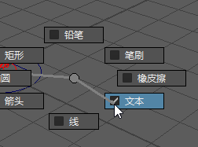

在 Blue Pencil 工具中时按 Ctrl + Shift 并单击鼠标右键，以显示标记菜单。
Blue Pencil 标记菜单可用于在 Blue Pencil 工具之间快速切换。标记菜单可以与绘图板光笔配合使用，或者在您想要快速直观地工作时随时可用。
触发 Blue Pencil 标记菜单
- 打开 Blue Pencil。
- 按 Shift + Ctrl 键并单击鼠标右键。Blue Pencil 标记菜单会显示，并在按住鼠标右键的同时继续显示。
- 按住鼠标右键，并沿所需工具的方向拖动；拖动时会显示子菜单。
- 选择工具名称以激活关联的工具。

在标记菜单中单击工具名称以选择该工具
- 选择所需的工具或功能。
Blue Pencil 标记菜单选项
以下是 Blue Pencil 标记菜单中提供的工具。
| 菜单项 | 效果 | |
|---|---|---|
| 变换(Transform) | 激活“变换”(Transform)模式，以便选择图形的某个区域，然后平移、旋转和缩放该区域。有关如何修改 Blue Pencil 图形的步骤，请参见使用 Blue Pencil 变换模式修改图形。 | |
| 绘制(Draw) | 展开以显示 Blue Pencil 绘制工具的选择。单击要使用的工具名称旁边的选项框： | |
| 铅笔(Pencil) | 用于在查看器窗口中徒手绘制。 | |
| 笔刷(Brush) | 用于在查看器窗口中徒手绘制。 | |
| 橡皮擦(Eraser) | 在当前帧擦除 Blue Pencil 草图上的笔刷笔划。 | |
| 文本(Text) | 将文本框添加到可在其中键入内容的场景中。 | |
| 直线(Line) | 在屏幕上拖动以创建一条直线。 | |
| 箭头(Arrow) | 在屏幕上拖动以创建一条带有箭头的线。 | |
| 椭圆(Ellipse) | 在屏幕上拖动以创建一个椭圆。 | |
| 矩形(Rectangle) | 在屏幕上拖动以创建方形。 | |
| 帧(Frame) | 展开以显示 Blue Pencil 帧管理工具的选择： | |
| 插入(Insert) | 将当前时间的 Blue Pencil 帧添加到场景中。 | |
| 复制(Duplicate) | 创建当前时间的 Blue Pencil 帧的副本。 | |
| 下一帧(Step Forward) | 移动到以下 Blue Pencil 帧。 | |
| 粘贴(Paste) | 添加当前时间的剪贴板内容。 | |
| 删除(Delete) | 从场景中移除当前时间的帧。 | |
| 清除(Clear) | 保留帧，但移除当前时间的帧内容。 | |
| 复制(Copy) | 创建当前时间的 Blue Pencil 帧的副本。 | |
| 逐帧回放(Step Backward) | 移动到上一 Blue Pencil 帧。 | |
| 剪切(Cut) | 移除当前时间的帧并将其添加到剪贴板。 | |
| 重影(Ghosting) | 展开以显示 Blue Pencil 重影选项的选择。单击要使用的功能名称旁边的选项框： | |
| 重影上一个(Ghost Previous) | 显示前一帧的透明“重影”图像。 | |
| 重影下一个(Ghost Next) | 显示后一帧的透明“重影”图像。 | |
| 清理(Cleanup) | 展开以提供从当前帧中移除不需要的草图瑕疵的选项。请参见清理 Blue Pencil 草图(Clean up Blue Pencil sketches)。 | |
| 删除活动层(Delete Active Layer) | 从场景中删除活动的 Blue Pencil 层。 | |
| 删除活动摄影机层(Delete Active Camera Layers) | 从摄影机中删除活动层指定到的每个 Blue Pencil 层。 | |
| 全部删除(Delete All) | 从场景中移除所有 Blue Pencil 数据。 | |